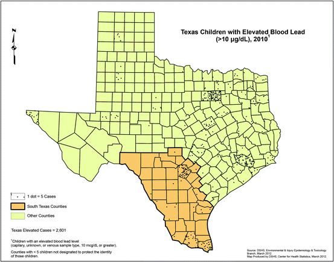
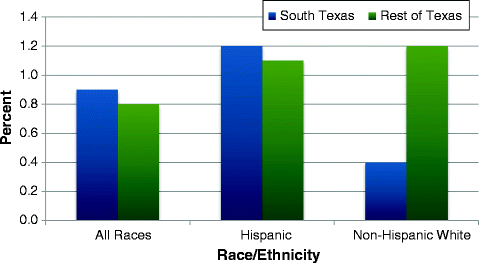
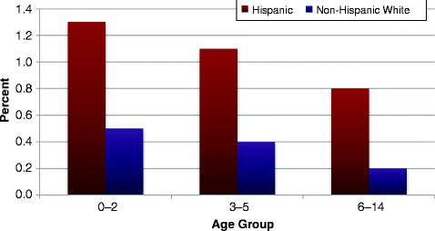
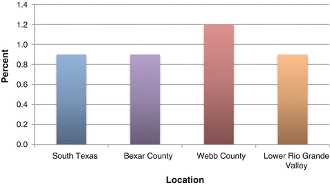
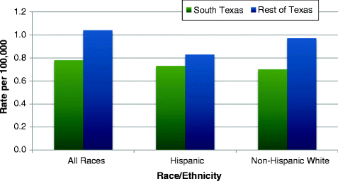
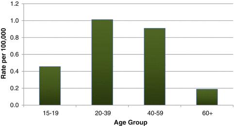
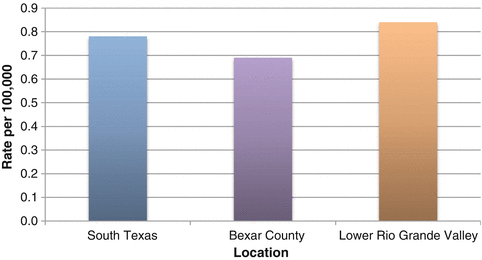

A broad range of different environmental exposures can cause health problems including air and water pollution, exposure to lead and other heavy metals, pesticides and chemicals, and many more. This chapter covers two main environmental exposure health status indicators: elevated child blood lead levels and pesticide exposures.
Childhood Lead Poisoning
Lead is a significant and widespread environmental hazard for all Texas children. Exposure to lead can lead to a number of medical conditions including long-term neurological damage that is often associated with learning and behavioral problems. Blood lead levels ≥10 μg/dL are considered to be elevated, although a child may often not show symptoms, even at higher levels. Very elevated lead levels can result in death. Lead is a ubiquitous toxin with varied exposure sources including dust or chips from lead-based paints, contaminated soil, crafts/hobbies, and home remedy/folk medicines.
With increased awareness and efforts to reduce exposure, childhood lead poisoning has decreased in recent years. In 2005, 54,051 US children aged 6 or younger tested with confirmed elevated blood lead levels, compared to 24,375 children in 2009, a decrease of 55 % in 5 years [1]. Children aged 6 or younger are at greater risk of lead poisoning than older children due to increased absorption, predominant hand-to-mouth behavior, and developing neurological systems. Among US children younger than 6 in 1999–2004, African-American children had a higher percentage of elevated blood lead levels (3.4 %) than did Hispanic children (1.2 %) or non-Hispanic white children (1.2 %) [2]. Children who live or spend a significant amount of time in pre-1950s housing are at increased risk of childhood lead poisoning. Poverty and living in an area of existing high childhood lead prevalence are also considered surrogate markers for a child’s potential lead exposure risk.
Childhood Lead Poisoning in South Texas
In terms of sheer numbers, Bexar County and the Lower Rio Grande Valley region had the most children aged 0–14 with elevated blood lead levels (>10 μg/dL) in South Texas (Fig. 9.1). Numbers are most likely greater in these areas because of relatively large population sizes or because of a large percentage of people with low socioeconomic status living in the area.

Fig. 9.1
Texas children aged 0–14 with elevated blood lead levels (≥10 μg/dL) by location of residence, 2010. Source: Texas Childhood Lead Poisoning Prevention Program, Texas Department of State Health Services
Overall, the percent of children aged 0–14 with elevated blood lead levels among those tested in South Texas was 0.9 %, a slightly higher percentage than among those tested in the rest of Texas (0.8 %) (Fig. 9.2). However, for non-Hispanic white children, the percentage with elevated blood lead levels of those tested was lower in South Texas (0.4 %) than in the rest of Texas (1.2 %). In South Texas, among Hispanic children tested, 1.2 % had elevated blood lead levels, whereas among non-Hispanic white children tested, only 0.4 % had elevated blood lead levels (Fig. 9.2).

Fig. 9.2
Percent of South Texas children 0–14 years of age with elevated blood lead levels (≥10 μg/dL) among children tested, 2006–2010. Source: Texas Childhood Lead Poisoning Prevention Program,Texas Department of State Health Services
In South Texas, for both Hispanic and non-Hispanic white children, the youngest age group (aged 0–2) had the highest percent of elevated blood lead levels among those tested (Fig. 9.3). However, for all three age groups, Hispanic children in South Texas had higher percentages of elevated lead levels among those tested than did non-Hispanic white children in South Texas (Fig. 9.3).

Fig. 9.3
Percent of South Texas children aged 0–14 with elevated blood lead levels (≥10 μg/dL) among children tested, by age group and race/ethnicity, 2006–2010. Source: Texas Childhood Lead Poisoning Prevention Program, Texas Department of State Health Services
In South Texas, the percentage of boys with elevated blood lead levels among those tested (1.0 %) was slightly higher than the percentage of girls with elevated blood lead levels (0.8 %). The percentage of children with elevated blood lead levels (of those tested) was similar between nonmetropolitan South Texas counties (1.0 %) and metropolitan counties (0.9 %).
The percent of elevated blood lead levels among children tested was slightly but not significantly higher in Webb County (1.2 %) than in South Texas as a whole (0.9 %). The percentage of children with elevated blood lead levels was the same in the Lower Rio Grande Valley region and Bexar County (0.9 %) as in South Texas (Fig. 9.4).

Fig. 9.4
Percent of children aged 0–14 with elevated blood lead levels (≥10 μg/dL) among children tested in selected South Texas locations, 2006–2010. Source: Texas Childhood Lead Poisoning Prevention Program, Texas Department of State Health Services
Work-Related Pesticide Exposure
A pesticide is any substance or combination of substances that is used for preventing, repelling, controlling, or destroying any type of pest. Types of pesticides include not only insecticides but also herbicides, fungicides, rodenticides, disinfectants, and sanitizers [3]. In the USA, about 1.1 billion pounds of pesticide active ingredient are used each year, and more than 20,000 different pesticide products are currently sold nationwide [4]. Although pesticides are useful to society, they also have the potential to cause great harm to humans, because they are designed to kill or damage living organisms. Health effects vary depending on the type of pesticide involved and the level of exposure. Acute high-level pesticide exposures can cause nausea and vomiting, skin or eye irritation, difficulty breathing, seizures, or even death [5]. Long-term pesticide exposure effects have been associated with changes in neurobehavioral performance, neurological damage and diseases [6, 7], and certain types of cancers [8]. Children are particularly susceptible to pesticides [9].
Acute pesticide exposures are most commonly occupational exposures. In 2008, the annual rate of work-related pesticide poisonings in the USA was estimated to be 1.5 per 100,000 workers. [10] Agricultural workers are at especially high risk of pesticide exposure. The annual incidence of pesticide-related illness among agricultural workers from 1998 to 2007 time period was approximately 48/100,000 [11]. This high incidence among persons employed in agriculture is of particular concern for Hispanics, because 88 % of all farm workers in the USA are Hispanic. Because of pesticide drift, people who live in agricultural areas have a higher risk of pesticide exposure than people who live in nonagricultural areas [9]. For all occupations combined, males have a slightly higher risk of pesticide-related illness than do females; however, among agricultural workers, the incidence of pesticide-related illness in females is higher than the incidence in males [11, 12].
Work-Related Pesticide Exposure in South Texas
Overall, the South Texas working population had a slightly lower incidence of pesticide exposure (0.8 cases per 100,000 population) than did workers in the rest of Texas (1.0/100,000). Hispanics in South Texas had an incidence of pesticide exposure (0.7/100,000) that was comparable to the incidence for Hispanics in the rest of Texas (0.8/100,000) (Fig. 9.5). In South Texas, the incidence of pesticide exposure was similar between Hispanics and non-Hispanic whites (0.7/100,000); however, in the rest of Texas, incidence was slightly but not significantly higher for non-Hispanic whites (1.0/100,000) than for Hispanics (0.8/100,000) (Fig. 9.5).

Fig. 9.5
Incidence of work-related pesticide exposure by location and race/ethnicity, 2006–2010. Source: Pesticide Exposure Surveillance in Texas (PEST) program, Texas Department of State Health Services
In South Texas, the incidence of occupational pesticide exposure was slightly but not significantly higher in males (0.9/100,000) than females (0.6/100,000). Residents of nonmetropolitan counties in South Texas had a significantly higher incidence of occupational pesticide exposure (2.2/100,000) than did those in metropolitan counties (1.3/100,000). Adults aged 20–59 had higher incidences of work-related pesticide exposure than other age groups (Fig. 9.6).

Fig. 9.6
Incidence of work-related pesticide exposure in South Texas by age group, 2006–2010. Source: Pesticides Exposure Surveillance in Texas (PEST) program, Texas Department of State Health Services
From 2006 to 2010, incidences of work-related pesticide exposure in Bexar County (0.7/100,000) and the Lower Rio Grande Valley (0.8/100,000) were comparable to the incidence seen in South Texas as a whole (0.8/100,000). The incidence of work-related pesticide exposure in Webb County could not be compared, as the number of cases over this time period was too few to report (Fig. 9.7).

Fig. 9.7
Incidence of work-related pesticide exposure in selected South Texas locations, 2006–2010. No rate is shown for Webb County because the number of cases in this county was too few to report. Source: Pesticides Exposure Surveillance in Texas (PEST) program, Texas Department of State Health Services
Summary
Table 9.1
Summary table of estimates in South Texas, the rest of Texas, and nationwidea for each of the environmental health indicators analyzed
Incidence/prevalence estimates | |||
|---|---|---|---|
Health indicator | South Texas, 2006–2010 | Rest of Texas, 2006–2010 | Nationwide |
Childhood lead poisoning | 0.9 % of those tested | 0.8 % of those tested |
b
|
References
1.
Centers for Disease Control and Prevention. Number of children tested and confirmed EBLLs by state, year, and BLL group, children <72 months old. 2009. http://www.cdc.gov/nceh/lead/data/StateConfirmedByYear_1997_2009.htm. Accessed May 2012.
2.
3.
U S Environmental Protection Agency. About pesticides: what is a pesticide? 2006. http://www.epa.gov/pesticides/about/index.htm. Accessed May 2007.
4.
National Institute for Occupational Safety and Health, Centers for Disease Control and Prevention. Pesticide illness and injury surveillance. 2011. http://www.cdc.gov/niosh/topics/pesticides/. Accessed May 2012.
5.
The Mid-Atlantic Center for Children’s Health and the Environment. Pesticides. 2003. http://www.childrensnational.org/MACCHE/ResourcesAndTutorials/Pesticides.aspx. Accessed May 2007.
6.
7.
8.
National Cancer Institute. Cancer trends progress report – 2009/2010 update. 2007. http://progressreport.cancer.gov/doc_detail.asp?pid=1&did=2009&chid=91&coid=913&mid=. Accessed Apr 2012.
9.
Quintero-Somaini A, Quirindongo M, Arevalo E, Lashof D, Olson E, Solomon G. Hidden danger: environmental health threats in the latino community. National Resources Defense Council; 2004.
10.
Council of State and Territorial Epidemiologists. Indicator 11: acute work-related pesticide poisonings reported to poison control centers. 2011. http://www.cste.org/dnn/ProgramsandActivities/OccupationalHealth/OccupationalHealthIndicators/Indicator11/tabid/107/Default.aspx. Accessed May 2012.
11.